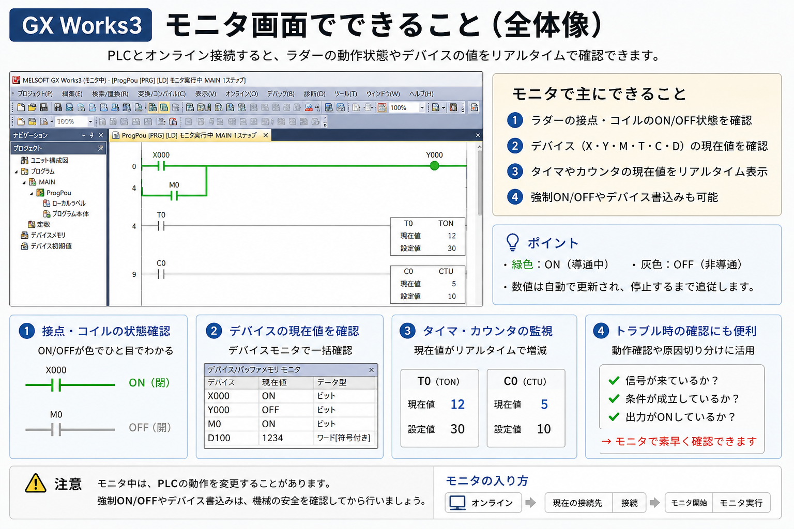
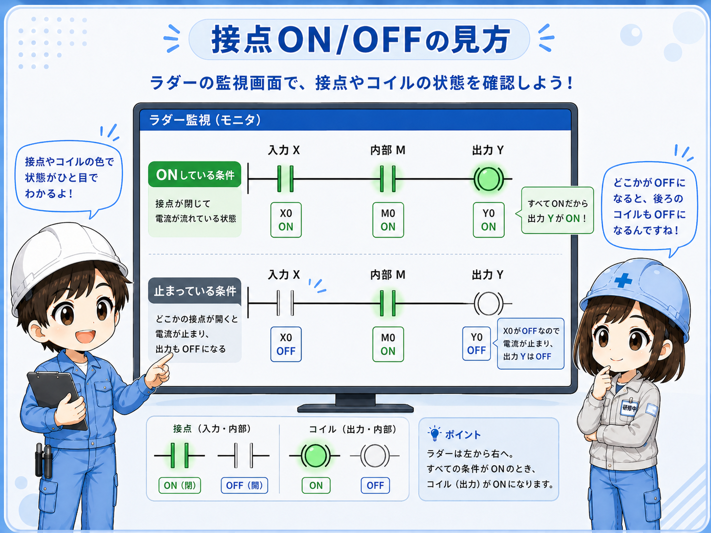
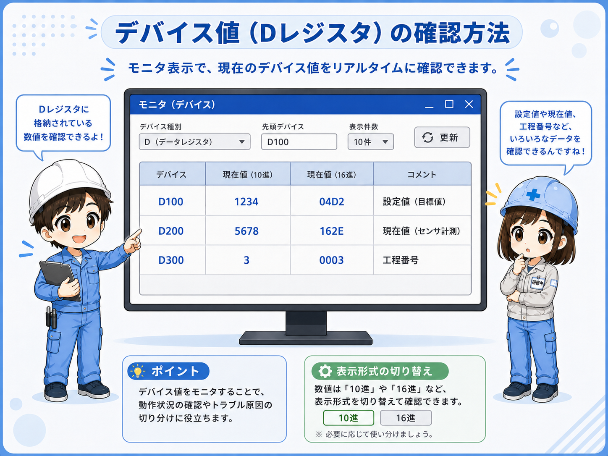
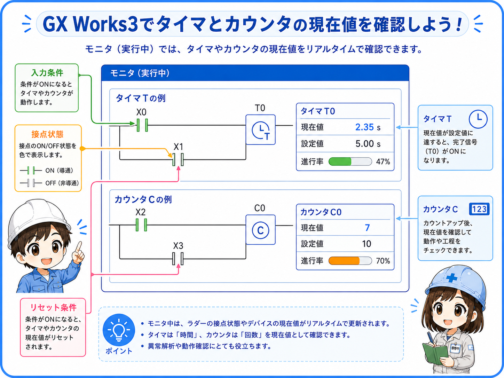
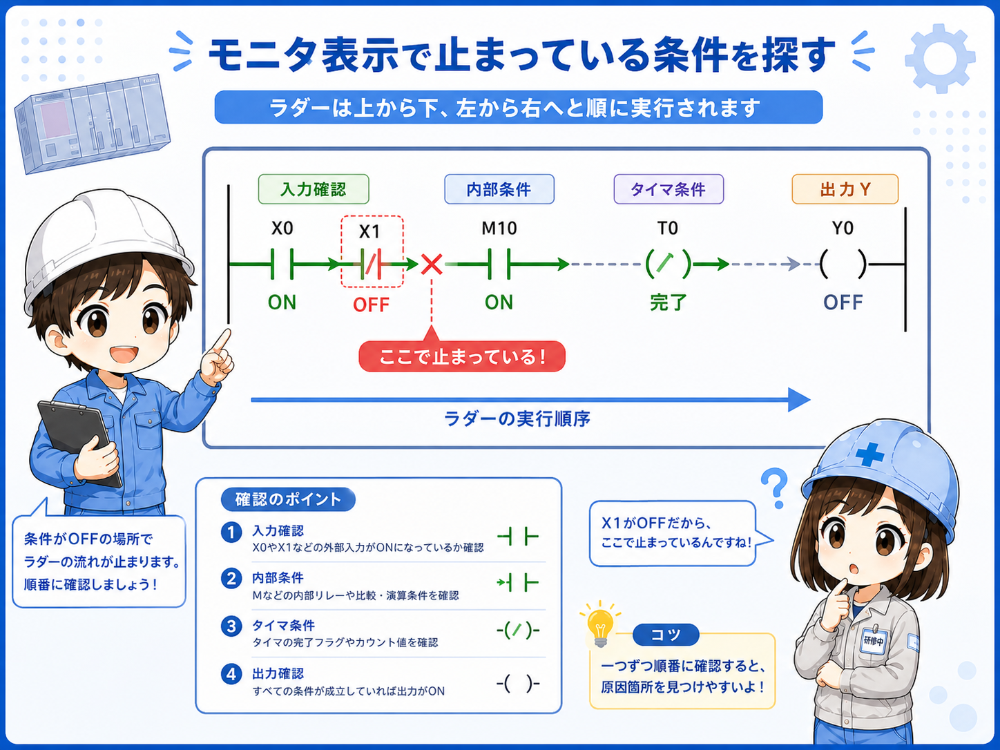
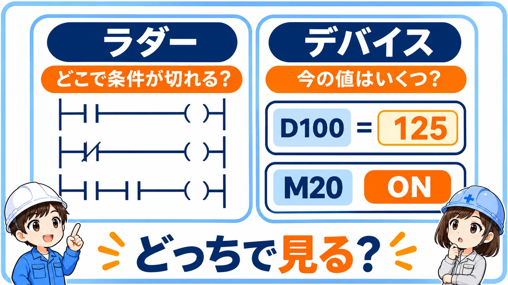
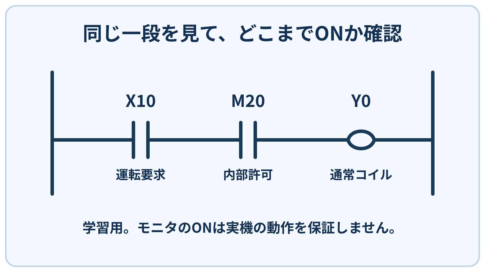

1. 先に結論
最終内容更新：
回路のどこで条件が止まったかならラダーモニタ、特定のX・M・YやDの値ならデバイスモニタ。 同じPLCの同じ番号を見ていても、画面のYがONなのはPLC内部の状態です。機械が実際に動いた証拠ではありません。画面が更新されているか不明なら、まず表示の根拠を確かめます。
GX Works3のモニタ表示は、ラダーを「今どの条件がONしているか」という目線で見るための機能です。 ラダー図だけを見るより、実際の入力、内部リレー、タイマ、カウンタ、出力の状態を合わせて確認できます。
大事なのは、画面上で光っている・数値が変わっている部分だけを見るのではなく、左から右へ条件がつながっているかを順番に追うことです。 どこで条件が途切れているかを見ると、入力側の問題なのか、内部条件なのか、出力側なのかを分けやすくなります。
モニタ表示は「止まっている条件」を探すために使う
出力がONしない時は、最後の出力コイルだけを見るのではなく、その手前の入力条件・インターロック・タイマ条件を順番に確認します。

先輩モニタ表示は、ラダーが今どう動いているかを見るための入口だよ。まずは条件がどこまでつながっているかを見よう。

新人出力だけじゃなくて、手前の接点や内部条件を順番に見るんですね。
PLCのエラーランプが点いた時に見る順番
PLC本体のERR/ALMなどが点いた時に、設備状態、電源、I/O、通信、エラー履歴、復旧前確認の順で落ち着いて確認する基本を整理しています。
2. モニタ表示で見る基本の流れ
トラブル確認でモニタ表示を見る時は、ラダーの上流から順番に追います。 入力条件、内部条件、タイマ・カウンタ、出力コイルの順に見ると、どこで条件が成立していないかを見つけやすくなります。

- 入力を見る：Xやセンサー入力がONしているか確認します。
- 内部条件を見る：Mやインターロック条件が成立しているか確認します。
- 時間・回数を見る：TやCの現在値、設定値、接点状態を確認します。
- 出力を見る：YやコイルがONしているか確認します。
- 数値を見る：Dなどのデータ値が期待どおりか確認します。
ラダーモニタとデバイスモニタ、どちらを見る？
- ラダーモニタ：どの接点で条件が途切れたか、前後のつながりを読む。例：同じ段のX10、M20、Y0を見る。
- デバイス/バッファメモリー一括モニタ：番号が分かっているビットや数値を確かめる。例：D100の現在値を表示し、回路が参照している番号と突き合わせる。
表示できないときは、接続先・CPU、対象番号とモニタの実行状態、通信エラーや更新時刻を先に確認します。値が止まっているだけでは、表示が止まったとは限りません。ラダー画面のバッファメモリ表示は別の話で、三菱電機はFX5U・FX5UC・FX5UJについて公式FAQで表示条件を案内しています。
3. 接点・コイルのON/OFFを見る
ラダーのモニタ表示では、接点やコイルの状態を見ながら、条件が成立しているかを確認します。 入力XがONしているか、内部MがONしているか、出力YがONしているかを、ラダーの流れに沿って確認します。
ただし、画面上でONしているように見えても、実際の機器が動くとは限りません。 PLC内部の状態と、出力ユニット、リレー、電磁弁、ランプなどの現物側は分けて確認します。

X入力
センサー、押しボタン、リミットスイッチなどの入力状態を見ます。
M内部リレー
ラダー内部で使う条件や保持状態を確認します。
Y出力
PLCが出力命令を出しているかを見ます。
接点の向き
a接点は参照するビットがONの時に成立し、b接点はそのビットがOFFの時に成立します。「条件成立」と「デバイスの値がON」は分けて読みます。
4. Dレジスタなどのデバイス値を見る
GX Works3では、Dレジスタなどの数値デバイスも確認できます。 例えば、タッチパネルから入った設定値、センサーから取り込んだ数値、演算結果、工程番号などを確認する時に使います。
数値を見る時は、10進・16進の表示形式と、符号あり・なし、BCD（10進1桁ずつを符号化したデータ）などのデータの読み方を分けて確認します。 表示形式が違うだけで、値の見え方が変わることがあります。

数値は「値」「単位」「表示形式」をセットで見る
例えば同じD100でも、圧力値、工程番号、時間設定、温度値など、使われ方はプログラムによって違います。 コメントや仕様書と合わせて確認します。
5. タイマ・カウンタの現在値を見る
タイマTやカウンタCは、条件が入ってから現在値が変化します。 タイマが進んでいるのか、設定値まで到達しているのか、カウンタが数えているのかを確認すると、動作待ちなのか条件不成立なのかを分けやすくなります。
タイマ接点がONしない時は、タイマ入力条件が入っていない、設定値が大きすぎる、途中でリセットされている、別条件で止まっているなどを確認します。

現在値が変わらない時
タイマやカウンタの現在値が変わらない場合、まずその手前の入力条件が成立しているかを確認します。 数値だけを見ても、原因が見えにくいことがあります。
6. どこで条件が止まっているかを見る
たとえば、動かない搬送機の画面で「ON」が見えたとします。何のONかを確認してから、同じ設備・同じPLC・同じ時点の記録を照らし合わせます。見るだけで情報が足りなければ、動かして確かめず「未確認」として引き継ぎます。
モニタ表示で一番使う場面は、設備が動かない時に「どの条件が成立していないか」を見る時です。 動いていない機器に対応する出力番号を先に特定し、その出力を駆動する段で条件を左から右へ追います。
入力が入っていないのか、モード条件が違うのか、インターロックで止まっているのか、タイマ待ちなのかを切り分けると、確認する現物も絞りやすくなります。

| 見えている状態 | 考えられる見方 | 次に見る場所 |
|---|---|---|
| 入力XがONしない | センサー、押しボタン、配線、入力ユニット側で止まっている可能性 | 外から確認できるセンサー・入力LEDの表示、図面上の端子台と電源系統 |
| M条件がONしない | モード条件、保持条件、インターロックが成立していない可能性 | 前段のラダー、自己保持、異常条件 |
| T/Cが進まない | タイマ・カウンタの入力条件が入っていない可能性 | 入力条件、リセット条件、設定値 |
| YはONしている | PLC内部のYがON。負荷への通電や動作は別に確認が必要 | 同時刻の表示・動作記録、図面上の負荷・電源 |
同じ一段で見分ける：途中で止まった？ 出力の先？

教材例は X10（運転要求の入力）と M20（運転許可の内部条件）のa接点を直列につなぎ、通常コイル Y0 に渡す一段です。ほかの段からの上書き・強制がなく、その段が実行される例とします。
- X10 ON / M20 OFF / Y0 OFF：要求は来ていますが、この段ではM20で止まっています。まずM20を作るモードや許可の条件を、既存ラダーと記録で確認します。
- X10 ON / M20 ON / Y0 ON、機械は停止：この段の条件は成立しています。出力表示、図面上の負荷側の系統、設備の動作記録へ確認先を移します。ただし、これだけで断線や部品故障とは判断しません。
- 更新状態が分からない：古い記録のONかもしれません。同じCPU・時点・番号を照合できるまで、条件不成立とも負荷側異常とも言えません。

7. モニタ表示を見る時の注意点
モニタ表示は便利ですが、見えているのはPLC内部やデバイス状態です。 画面上で出力がONしていても、実際の負荷が動くには出力ユニット、配線、リレー、電源、機械側の条件も必要です。
また、オンライン状態での確認や実機接続中の作業は、設備の動作に関わります。 強制ON/OFF、オンライン書込み、値変更は、この記事では扱わず、別記事で安全注意を含めて整理する前提です。
モニタ表示と操作を混同しない
モニタ表示は状態を見るためのものです。 現在値を読むのと、変更欄で値を書き換えるのは別の操作です。値変更で狙った出力が出るとは限らず、別の条件や動作に影響することもあります。この切り分けでは強制ON/OFF、値変更、書込み、試運転は行いません。実機を見る必要がある場合は、許可された観察範囲を守り、盤内・機構部の点検は担当者に引き継ぎます。
8. まとめ
GX Works3のモニタ表示では、ラダーの接点・コイルのON/OFF、Dレジスタの値、タイマ・カウンタの現在値を確認できます。 トラブル時は、出力だけを見るのではなく、入力条件、内部条件、時間・回数条件、出力条件を順番に追うことが大切です。
- モニタ表示は、今のラダー状態を確認するために使う
- 入力X、内部M、出力Yをラダーの流れに沿って見る
- Dレジスタなどの数値は、表示形式と単位を合わせて確認する
- タイマ・カウンタは、入力条件・現在値・設定値をセットで見る
- 画面上のONと、現物が動くことは分けて考える
メーカー公式資料
公式資料確認日：2026-11-28
- 三菱電機「PID制御テクニックガイド」：第2.10節、ラダーとデバイス/バッファメモリー一括モニタの表示例。
- 三菱電機 FAQ No.38727：FX5U・FX5UC・FX5UJで一括モニタとラダー表示の条件が異なる事例。
GX Works3の表示名や対応機能は対象CPU・バージョンの最新資料を優先してください。本文の回路は観察の考え方を示す教材例で、実機の配線・安全回路・操作手順ではありません。